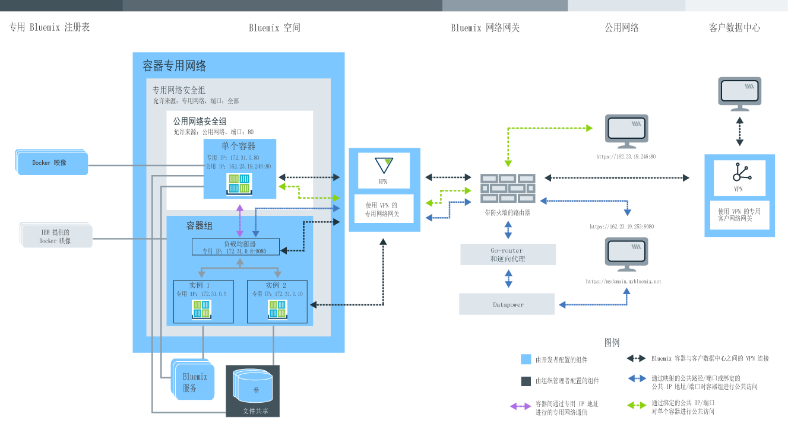

计划使用 单个和可扩展容器
了解用户角色
容器由组织管理员和容器开发者管理。下图显示组织的样本容器配置，并突出显示可由组织管理员或容器开发者设置的组件。 
请查阅本主题中的子部分，以查找有关每个组件、您可做出的决策以及配置的信息。其中有些配置在创建容器后便不可更改。事先了解这些配置可帮助您确保所有资源（如内存、磁盘空间和 IP 地址）可用于开发团队，并最大程度地利用组织配额。管理 IBM Bluemix Container Service 的 Bluemix 组织
在 Bluemix 中，您可以使用组织来启用团队成员之间的协作，并促进项目中云资源的逻辑分组。 每一个组织都会分配一个组织管理员，负责设置开发环境（空间），以及授予团队成员对云资源的访问权，成员需要这些云资源才能成功为其应用程序创建容器。 此设置包含分配公共 IP 地址、数据存储和容器内存。作为组织管理员，您还可以查看云资源的当前配额和用量，并根据需要进行调整。
- 通过在组织中为用户提供管理员角色，指定组织管理员。
- 通过在空间中为用户提供开发者或审计员角色，指定容器创建者。
为专用 Bluemix 注册表设置组织名称空间
要存储并管理 IBM Bluemix Container Service 的专用映像，每一个组织都需要在 Bluemix 中设置其自己的专用 Docker 映像注册表。专用注册表的这一名称被称为名称空间，并且在 Bluemix 中必须唯一。
选择组织的名称空间时，请考虑以下规则。
- 名称空间在 Bluemix 中必须唯一。
- 名称空间长度可以是 4-30 个字符。
- 名称空间必须至少以一个字母或数字开头。
- 名称空间仅可以包含小写字母、数字或下划线 (_)。
在 Bluemix GUI 中，执行以下步骤。
登录到 IBM Bluemix Container Service 之后，在 CLI 中运行以下命令：
检索组织的名称空间
如果已经设置组织的名称空间，那么可以通过 Bluemix GUI 或 CLI 检索该名称空间。
在 Bluemix GUI 中，执行以下步骤。
在 CLI 中，登录到 IBM Bluemix Container Service 服务，然后运行以下命令。
配额和 Bluemix 帐户
Bluemix 中的每一个组织都预设了容器内存、公共 IP 地址、文件共享以及在组织的所有空间之间共享的服务数。这些预设值称为配额。
Bluemix 帐户类型
| 帐户类型 | 描述 |
|---|---|
| 免费试用 | 单个和可扩展容器 的免费试用版不可用。 了解有关集群管理和在 Bluemix Public 上迁移至 IBM Bluemix Container Service 中的 Kubernetes 的信息。 |
| 现买现付 | 如果注册现买现付帐户，那么只需要为您所使用的 Bluemix 资源付费。 |
| 预订 | 如果注册预订帐户，那么需要承诺每月最低花费量，您可享受适用于该最低费用的预订折扣。此外，您需要为超出最小花费量的任何使用量付费。 |
| Bluemix Dedicated | 使用 Bluemix Dedicated 时，必须至少注册为期一年的使用期限。在该期限内，您每月所支付的费用取决于所需的专用服务以及预订帐户（通过该帐户，您可以访问所有公共服务）。 |
| Bluemix Local | 使用 Bluemix Local 时，必须至少注册为期一年的使用期限。在该期限内，您每月所支付的费用取决于所需的本地服务以及预订帐户（通过该帐户，您可以访问所有公共服务）。 |
付费帐户的缺省配额
| 资源 | 付费帐户配额限制 |
|---|---|
| 公共 IP 地址 | 64 |
| 容器内存 | 64 GB 注： 空间中的每个容器都会使用配额，无论其是否在运行。
要释放内存，必须除去未使用的容器。
|
| 文件共享 | 10 个文件共享 |
| 容器和容器组 | 无限数量 注： 容器和容器组的大小对容器内存限制有重要影响，但是对您来说，容器的数目却并没有特定限制。
|
| 映像 | 25 注： IBM 映像不会计入专用 Bluemix 注册表中的映像限制。
|
| 空间 | 无限数量 注： 每个空间至少需要 2 个公共 IP 地址和 2 GB 的容器内存，在您登录到新空间并尝试将其用于 IBM
Bluemix Container Service 时，会自动分配这些资源。这些资源会计入配额，但是对您来说，空间的数目并没有特定限制。
|
为空间分配配额
- 在帐户详细信息的“管理组织”中，选择组织。
- 在“配额”部分中，查看容器的详细信息。
- 在配额分配表中，通过单击编辑按钮，更改每一个空间分配的配额。
- 单击保存按钮以保存更改。
最充分利用配额的提示
- 确保除去未使用的容器，以便这些容器的配置不会计入配额。有关更多信息，请参阅除去单个容器、除去容器组和除去多容器应用程序。
- 当不可从因特网访问容器时，请不要将公共 IP 地址绑定到容器。
- 要减少公共 IP 地址的使用，请考虑使用容器组，以替代单个容器。容器组使用路径进行公共访问，不受 IP 地址配额的限制。有关更多信息，请参阅通过 Bluemix GUI 作为容器组运行长期服务。
持久数据存储
组织管理员可以创建具有特定存储大小和 IOPS 的文件共享，以满足空间的存储需求。 供应文件共享时，其大小可以从 20 GB 到 12 TB，且 IOPS/GB 为 0.25、2 或 4。与 IOPS 数相关的文件共享大小会影响从容器卷读取或向容器卷写入数据的速度。
在 Bluemix 中使用 IBM Bluemix Container Service 创建容器
要在 Bluemix 中使用 IBM Bluemix Container Service 创建用于运行应用程序的容器，您必须被授予组织空间的开发者权限。作为应用程序的开发者，请务必了解容器组件如何相关，以及您可以如何更改容器的配置，以满足应用程序的功能和非功能需求。
Bluemix GUI、命令行和 REST API
计划使用 IBM Bluemix Container Service 时，您可以使用 Bluemix GUI，安装命令行界面 (CLI)，或者针对 REST API 发送 HTTP 请求来访问 IBM Bluemix Container Service。
Bluemix GUI 和 CLI 可用于完成 IBM Bluemix Container Service 中的大部分任务。但是，有些任务只能由 Bluemix GUI 或 CLI 执行。因此，请准备使用这两种方法来管理容器。
如果不想使用 Bluemix GUI，也不想使用 CLI，那么可以直接向 IBM Bluemix Container Service API 服务器发送 HTTP 请求来通过 REST 管理容器。
下表显示需要 Bluemix GUI、IBM Bluemix Container Service CLI 或 REST API 的所有容器相关任务。此处未列出的任务可由所有方法执行。| 任务 | GUI | CLI | API |
|---|---|---|---|
| 查看映像漏洞 |  |
 |
|
| 将映像推送至注册表 | |
|
|
| 从注册表拉出映像 | |
|
|
| 从 Docker Hub 复制映像 | |
|
|
| 更改配额分配 | |
|
|
| 检索组织和空间特定配额 | |
|
|
| 查看详细日志信息 | |
|
|
| 指定更多日志 | |
|
|
| 定制日志 | |
|
|
| 登录到正在运行的容器 | |
|
|
| 使用 Docker Compose | |
|
|
| 列出空间的卷 | |
|
|
| 将文件写入卷 | |
|
|
| 删除卷 | |
|
|
| 检索系统消息 | |
|
|
安装 CLI
安装并配置 IBM Bluemix Container Service CLI 以通过 CLI 管理容器。
通过 REST API 管理容器
使用 IBM Bluemix Container Service API 以通过 REST 使用单个容器和容器组。
IBM 公用、Docker Hub 和专用映像
容器映像是所创建的每一个容器的基础。映像通过 Dockerfile 进行创建，此文件包含用于构建映像的指令以及构建工件（例如，应用程序、应用程序配置及其依赖项）。将容器映像看成是可执行文件（.exe 或 .bin）。当您运行可执行应用程序文件时，即会创建应用程序的实例。 当您运行容器时，将从映像创建容器实例。容器映像存储在专用 Bluemix 注册表中，并且只能通过 CLI 进行添加。您要使用的每一个容器映像都必须位于该注册表中，才能基于该映像创建容器。
- IBM 公共映像
- 从 IBM Bluemix Container Service 所提供的其中一个 IBM 公用映像（如 IBM Liberty 和 IBM Node 映像）开始，测试 IBM Bluemix Container Service 的功能。 随后，您可以将其中一个映像用作父映像，修改 Dockerfile，并使用自己的应用程序代码，在其上构建自己的映像。
- Docker Hub 的映像
- 直接从 Docker Hub 复制映像到专用 Bluemix 注册表，或者从 Docker Hub 拉出映像，在本地对其进行修改，然后直接在注册表中对其进行构建。
- 创建自己的映像
- 如果已在本地 Docker 环境中使用容器映像，那么您可以将其推送到专用 Bluemix 注册表，以在 IBM Bluemix Container Service 中使用这些映像。您还可以创建自己的 Dockerfile，在本地对其进行构建并测试，然后将其推送到专用映像注册表。
查看专用映像注册表中的映像
您可以使用 Bluemix GUI 或 CLI，查看专用 Bluemix 映像注册表中可用的所有容器映像。
- 在 Bluemix GUI 中，选择目录，然后选择容器。您可以查看 IBM 所提供的映像以及之前推送至专用 Bluemix 注册表中的映像。
- 在 CLI 中，运行 bx ic images。
查看映像漏洞
防止容器关闭的 Dockerfile 提示
IBM Bluemix Container Service 提供许多功能，可使容器保持安全并为用户管理云资源。 根据您的应用程序，可能需要向 Dockerfile 添加额外的配置，以确保本地容器可在 Bluemix 中成功运行。
- 为网络延迟做好准备
- 当容器启动时，IBM Bluemix Container Service 会设置专用容器网络，并向容器分配专用 IP 地址。 此过程可能需要几秒钟时间。如果应用程序启动时需要活动的网络连接，请通过将 sleep 命令添加到 Dockerfile，确保先完成 IBM Bluemix Container Service 联网。
- 使用长时间运行的命令
- 要保持容器启动并在运行，至少需要在容器映像中包含一个长时间运行的过程。 例如，echo "Hello world" 是短时间运行的过程。 如果在映像中未指定其他命令，那么在执行命令后容器会关闭。 例如，要将 echo "Hello world" 命令转换为长时间运行的过程，您可以将其循环多次，或者在应用程序中的其他长时间运行的过程中包含 echo 命令。
IBM Bluemix Container Service 中的专用容器网络设置
容器专用网络可为一个空间中运行的单个容器和容器组创建隔离且安全的环境。 连接到相同专用网络的容器可以使用专用 IP 地址，向专用网络中的其他容器发送数据和从中接收数据。只有在绑定了一个公共端口以及一个公共 IP 地址（对于单独的容器）或一个公共路径（对于容器组）之后，容器才公共可用。
- IBM Bluemix Container Service 缺省专用网络设置
- 在 Bluemix 中，每一个空间都提供了一个应用缺省 IBM Bluemix Container Service 网络设置的容器专用网络。这些设置包括自动设置缺省专用网络安全组，以允许容器与容器组之间使用专用 IP 地址进行专用网络通信。在空间中创建容器或容器组时，它们会自动连接到缺省 IBM Bluemix Container Service 专用网络，并从子网 172.31.0.0/16 中为其分配专用 IP 地址。分配了专用 IP 地址后，同一网络中的所有容器都可以使用单个容器的专用 IP 地址或容器组的负载均衡器的专用 IP 地址（如果使用的是容器组），安全地在所有容器端口上通信。不必将容器端口映射到主机端口。
- 将容器连接到公司数据中心的虚拟专用网
- 通过使用 IBM® 虚拟专用网 (VPN) 服务，将 Bluemix 内专用容器网络中的单个容器和容器组，安全地连接到公司的数据中心。
IBM
VPN 会基于业界标准因特网协议安全性 (IPsec) 协议组，通过因特网，提供安全的端到端通信信道。
IPsec 协议通过对 VPN 端点之间交换的包进行加密，提供网络级别同级认证、数据完整性和数据机密性。
要在 Bluemix 中的容器和公司数据中心之间设置安全连接，您必须在内部部署数据中心内安装 IPsec VPN 网关或 SoftLayer 服务器。使用 IBM
VPN 服务，每个空间可以配置一个 VPN 网关，且最多可定义 16 个不同目标的连接。
要在 Bluemix 中设置容器的安全 VPN 连接，请参阅IBM VPN。
启动容器时处理网络延迟的提示
当容器启动时，IBM Bluemix Container Service 会设置专用容器网络，公开容器端口，并向容器分配专用 IP 地址。 此过程可能需要几秒钟时间。如果应用程序启动时需要活动的网络连接，那么可能尚未设置容器专用网络，这可能会导致应用程序崩溃。 要确保在应用程序启动之前完成 IBM Bluemix Container Service 联网，请考虑实施以下其中一个解决方案，以处理网络延迟。
- 将 sleep 命令添加到容器启动时执行的 Dockerfile。
在以下样本 Dockerfile 中，在应用程序启动之前，容器会等待 60 秒。
FROM sdelements/lets-chat:latest CMD (sleep 60; npm start) - 调整应用程序代码，以在应用程序启动之前，通过 ping 公共 IP 地址（举例来说）来检查活动网络连接。 如果您无法 ping IP 地址，请休眠几秒钟，然后重试一次。如果可以解析 IP 地址，请启动应用程序。
确定公用网络设置
缺省情况下，IBM Bluemix Container Service 中的每一个单个容器和容器组都可用于专用网络。 但是，您的应用程序可能需要因特网的辅助功能选项，或者您想要访问组织其他空间内的容器。 在这些情况下，您必须将容器向公用网络公开。根据您所选择的容器类型，使容器可供公用网络使用的方式也不同。
单个容器和 Docker Compose 公用网络设置
您在空间中创建的所有单个容器都会分配一个专用 IP 地址，您仅可以使用该地址从专用网络访问那些容器。 专用网络通信由缺省专用网络安全组进行保护，该组不允许与公用网络之间有任何传入和传出网络流量。如果您想要使应用程序可供公用网络使用，您必须公开公共端口，并将公共 IP 地址绑定到容器。
对于空间来说，必须请求公共 IP 地址，才能绑定到容器。请求公共 IP 地址时，会从公共 IP 地址池随机分配一个到空间。 当分配到空间时，IP 地址不会更改。 要将公共 IP 地址绑定到容器，您还必须在 bx ic run命令中使用 -p 选项来公开 HTTP 端口。公开端口会为容器创建公用网络安全组，该组只允许您在公开的端口上发送和接收公共数据。其他所有公共端口都将关闭，且无法用于从因特网访问应用程序。
可供空间使用的公共 IP 地址数取决于组织的配额。
bx ic ips- 空间中无可用的公共 IP 地址
- CLI 输出：
IP Address Container ID - 我的选择：请求新的公共 IP 地址并将其绑定到容器。
bx ic ip-requestbx ic ip-bind <IP_ADDRESS> <CONTAINER>
- CLI 输出：
- 空间中存在可用的公共 IP 地址，且其未绑定到容器
- CLI 输出：
IP Address Container ID 192.0.2.56 - 我的选择：将公共 IP 地址绑定到容器。
bx ic ip-bind <IP_ADDRESS> <CONTAINER>
- CLI 输出：
- 空间中存在可用的公共 IP 地址，但其已绑定到容器
- CLI 输出：
IP Address Container ID 192.0.2.56 d7b4a167-8e51-4b16-b591-1a17cb7ee41f - 我的选择：
- 从容器取消绑定已绑定的 IP 地址，并将其绑定到新容器。
bx ic ip-unbind <IP_ADDRESS> <CONTAINER>bx ic ip-bind <IP_ADDRESS> <CONTAINER> - 请求新的公共 IP 地址并将其绑定到容器。
bx ic ip-requestbx ic ip-bind <IP_ADDRESS> <CONTAINER>
- 从容器取消绑定已绑定的 IP 地址，并将其绑定到新容器。
- CLI 输出：
容器组公用网络设置
要使容器组可从因特网访问，您必须公开端口，并将其与公共路径或公共 IP 地址进行绑定。
- 具有缺省域的公共路径
- 公共路径包含主机和域名，由您输入到 Web 浏览器中用于访问容器组的完整公共 URL 组成。
每一个路径在 Bluemix 中必须是唯一的。
您可以在创建容器期间，选择路径的主机名，如 mycontainerhost。缺省系统域为 AppDomainName，此域已提供 SSL 证书，所以可以使用 HTTPS 来访问容器组，而无需任何额外配置。
示例：https://mycontainerhost.AppDomainName
注： 要使用公共路径，您必须在创建期间公开容器组的 HTTP 端口。非 HTTP 端口不能向公用网络公开。一个容器组仅可以公开一个公共端口。 不支持一个容器组多个公共端口。 - 具有定制域的公共路径
- 如果要使用自己的定制域而非缺省域 AppDomainName，必须在公共 DNS 服务器上注册定制域，在 Bluemix 中配置定制域，然后将定制域映射到公共 DNS 服务器上的 Bluemix 系统域。定制域映射到 Bluemix 系统域后，对定制域的请求会路由到 Bluemix 中的应用程序。创建定制域时，不要在域名中包含下划线 (_)。
要创建定制域，请参阅创建和使用定制域。
为了保护定制域安全，请上传 SSL 证书，以便可以使用 HTTPS 访问容器组。
- 公共 IP 地址
- 您还可以在使用命令行创建容器组时，绑定 IP 地址。只能将公共路径或浮动 IP 地址绑定到容器，但不能同时将公共路径和浮动 IP 地址绑定到容器。要从容器组除去 IP 地址，必须除去容器组，然后重新创建该组。使用公共 IP 地址创建容器组的示例：
bx ic group-create -p 9080 --ip 192.0.2.56 --name my_container_group registry.DomainName/ibmliberty
集成 Bluemix 服务以与容器一起使用
Bluemix 提供各种服务，您可以与 IBM Bluemix Container Service 一起使用，以为您的应用程序带来额外的功能，或者简化应用程序的实施和容器的管理。
- 在 Bluemix 用户界面中，选择 Bluemix“目录”。
- 在 CLI 中，运行 cf marketplace 命令。
要查找可帮助您管理容器的服务的相关信息，请参阅将服务与单个和可扩展容器集成。
持久数据存储选项
确定用于存储应用程序所创建数据或存储运行应用程序所需文件的位置。
| 数据存储器选项 | 描述 | 可以存储的数据量受限于 |
|---|---|---|
| 选项 1：运行时在容器内存储数据 | 使用此选项，您不会持久存储应用程序数据。数据仅在运行时可供容器使用。 重新创建容器时，所有数据都会丢失。 | 容器的大小 |
| 选项 2：在容器卷内存储数据 | 在 Docker 中安装卷时，该卷会安装到本地文件系统。在 IBM
Bluemix Container Service 中，限制了对计算主机的访问，因此无法将主机目录安装到容器。将改为使用组织范围的卷在两次容器重新启动之间持久存储数据。卷是在隔离的文件共享上进行托管的，这些文件共享用于安全存储应用程序数据，并管理对文件的访问权和许可权。由于此隔离，容器内的非 root 用户必须授予已安装卷的写许可权。 使用此选项，可以在两次容器重新启动之间持久存储和访问数据，在一个空间中的容器之间共享数据。删除容器时，不会除去相关联的卷。 注： 要将卷安装到容器，您必须先创建一个卷，请参阅使用 Bluemix GUI 创建卷。
|
托管卷的文件共享大小 |
| 选项 3：将容器连接到内部部署数据库 | 使用此选项，可以利用云中容器与本地环境之间的安全 VPN 连接，在现有的内部部署数据库中，持久存储和访问数据。 | 可用于内部部署数据库的磁盘空间 |
| 选项 4：将 Bluemix 数据库服务绑定到容器。 | 使用此选项，可以利用链接到云中容器的数据库服务，持久存储和访问数据。 大多数 Bluemix 数据库服务都免费对较小的数据量提供磁盘空间，因此您可以测试其功能。 | 你所选择的数据库服务和套餐 |
Bluemix 中容器卷的非 root 用户访问权
对于 IBM Bluemix Container Service，已对 Docker Engine 启用用户名称空间功能。用户名称空间提供隔离，因此容器 root 用户无法获取其他容器或计算主机的访问权。 但是，卷位于容器计算主机外部的 NFS 文件共享上。卷设置为识别容器中的 root 用户，但是因为卷在容器的外部，所以它们不了解用户名称空间。
对于某些应用程序，只有容器内部的用户才是 root 用户。但是，许多应用程序指定了写入容器安装路径的非 root 用户。如果您设计的应用程序指定非 root 用户需要卷的写许可权，那么您必须将以下过程添加到 Dockerfile 和入口点脚本中：
- 创建非 root 用户。
- 临时向 root 组添加用户。
- 在具有正确用户许可权的卷安装路径中创建目录。
更多信息，请参阅创建自己的具有适当非 root 许可权的 Dockerfile。
容器类型
使用 IBM Bluemix Container Service 创建容器之前，先决定所需的容器类型。 IBM Bluemix Container Service 提供不同的方法，在云中创建容器。 您所选择方法取决于容器中运行的应用程序的需求和依赖项。
单个容器
IBM Bluemix Container Service 中的单个容器类似于在本地 Docker 环境中创建的容器。 单个容器是一种很好的方式，可用于开始使用 IBM Bluemix Container Service、了解容器在 IBM Cloud 中的运作方式，以及 IBM Bluemix Container Service 所提供的功能。您还可以使用单个容器来运行简单的应用程序测试，或在开发应用程序的过程中使用单个容器。由于单个容器可以重新启动，并且不用于托管长时间运行的程序，因此对于需要高可用性的任何应用程序，必须使用容器组。
- 映像的大小有重大影响。映像越小，部署越快。
- 最初部署过几次映像后，部署速度会提高。初始部署时，映像必须下载到主机上的注册表。后续部署会更快。
- 联网设置可能需要几分钟时间。
- 单个容器部署起来比容器组快，因为组要设置路由。
- 具有链接容器的部署可能不如其他部署快，因为必须建立连接。
要通过 Bluemix GUI 创建单个容器，请参阅作为单个容器运行短期任务。
要通过 CLI 创建单个容器，请参阅使用命令行界面 (CLI) 作为单个容器运行短期任务。
容器组
容器组包含一些单个容器，这些容器全部都是基于同一容器映像创建的，因此也是以相同方法进行配置的。
容器组免费提供进一步的选项，可使您的应用程序具有高可用性。
要大幅增加容器组的可用性，您可以基于相同映像，创建映射到相同路径的另一个容器组。 当第一个容器组崩溃时，第二个容器组可以接管整个工作负载。 请在以下选项之间进行选择，以跨 IBM Bluemix Container Service 体系结构散布第二个容器组。- 映像的大小有重大影响。映像越小，部署越快。
- 最初部署过几次映像后，部署速度会提高。初始部署时，映像必须下载到主机上的注册表。后续部署会更快。
- 联网设置可能需要几分钟时间。
- 单个容器部署起来比容器组快，因为后者要设置路由。
- 未绑定到路径的容器组部署起来比无路径的容器组快。
- 未启用反亲缘关系的容器组比具有反亲缘关系的容器组快。使用反亲缘关系时，指定数量的主机必须分别下载映像层。
要通过 Bluemix GUI 创建容器组，请查看通过 Bluemix GUI 运行容器组主题。
要通过 CLI 创建容器组，请参阅通过 CLI 运行容器组。
容器组的负载均衡
容器组提供内置负载均衡，可将入局流量平均地（循环）路由到组中的各容器实例。 在创建了容器组或向现有组添加了实例后，不管是您自己添加的实例，还是在自动恢复期间重新创建的实例，都会启用负载均衡。


- A ：包含 3 个实例的容器组
- B ：容器组的负载均衡器
- 1、2 和 3 ：容器组中的实例
在将新实例添加到容器组之后，负载均衡器会建立 TCP 套接字连接，以确定何时开始将流量发送到新的容器实例。容器实例开始侦听其定义的端口时，负载均衡器将立即开始将流量发送到该实例。负载均衡器会向组分配专用 IP 地址，使该组可以由同一空间中的其他容器或服务进行访问。
由于此专用 IP 地址是分配给组而不是分配给各个实例，因此向组添加实例或在自动恢复期间重新创建实例时，此专用 IP 地址都不会更改。可以通过运行 bx ic group-inspect 来查找此专用 IP 地址。
容器组的反亲缘关系
在 bx ic group-create 命令中使用 --anti 选项创建容器组时，您可以选择是否启用反亲缘关系功能。
启用反亲缘关系时，容器实例会跨不同的物理计算节点分布，这可降低容器因硬件故障而崩溃的可能性。
要在 CLI 中使用 --anti 选项，必须已安装 IBM Bluemix Container Service 插件 (bx ic) V0.8.934 或更高版本。您可能无法对较大的组大小使用此选项，因为每一个 Bluemix 区域和组织可用于部署的计算节点集有限制。 如果部署不成功，请减少组中容器实例的数目，或者除去 --anti 选项。
容器组的自动恢复
在 bx ic group-create 命令中使用 --auto 选项创建容器组时，您可以选择是否启用自动恢复。


针对容器组启用了自动恢复并且该组已运行了 10 分钟时，该组的负载均衡器会开始通过 HTTP 请求定期检查组中每个容器实例的运行状况。如果容器实例在 100 秒内未响应，即会将该实例标记为“不活动”。自动恢复会从组中除去不活动的容器实例并重新创建这些实例。自动恢复会尝试恢复组中的容器实例 3 次。在第三次尝试后，自动恢复在 60 分钟内不会再恢复组中的任何容器实例。60 分钟后，自动恢复进程将再次启动。
容器组的自动扩展
容器组可基于应用程序所使用的 CPU 和内存，自动扩展容器组实例。
要了解有关自动扩展容器组实例的更多信息，请参阅自动扩展容器组（不推荐）。
Docker Compose
一些应用程序由多个组件组成，如数据库、服务和高速缓存，其中每一个组件必须在其自己的容器内运行。 由于将所有容器编排为同时启动、链接和关闭可能会非常困难，因此您可以使用 Docker Compose 来配置多容器部署，并仅通过一个命令来运行该部署。将 Docker Compose 看成是单个容器实例的集合，其中每一个容器都基于其自己的映像和配置。您配置多容器部署一次，并在 Bluemix 中对其进行部署。
- Docker Compose 部署可能不如其他部署快，因为要设置协调部署。
- 映像的大小有重大影响。映像越小，部署越快。
- 最初部署过几次映像后，部署速度会提高。初始部署时，映像必须下载到主机上的注册表。后续部署会更快。
- 联网设置可能需要几分钟时间。
要使用 Docker Compose 配置多容器部署，请参阅教程：使用 Docker Compose 和 IBM Bluemix Container Service 创建多容器部署。
监视和日志记录
在 Bluemix 中，容器随附内置监视和日志记录，方便您密切监视容器的运行状况。
IBM Bluemix 提供基于平台的监视和日志记录功能。 度量和日志数据可以从在云中运行的计算实例（如容器）和其他源进行收集。 从多个源汇总的数据随后可直观地用于分析、洞察和操作。
- 监视
- 容器度量是从容器外部收集的，您不必在容器内部安装并维护代理程序。对于生命周期较短的轻量级云实例和自动扩展组（其中可快速创建和销毁容器），容器内代理程序可能会产生大量的开销并耗用较长的设置时间。此频带外数据收集方法可避免这些问题，并免除了用户的监视负担。
- 日志记录
- 与度量类似，容器日志也是使用搜寻器从容器外部进行监视和转发的。数据将由搜寻器发送到 Bluemix 中的多租户 Elasticsearch，就像由其他容器内代理程序收集的日志一样，但无须在容器内安装代理程序。
要查看有关如何收集日志和度量以及如何创建定制仪表板的更多信息，请参阅容器监视和日志记录。